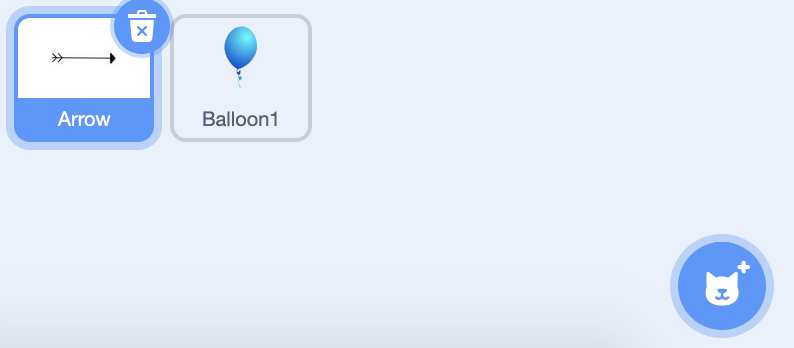

In this codelab, you'll make a balloon pop game.
First, we are going to program the arrow sprite to follow the mouse pointer. We will need to program the arrow sprite so that when the user clicks their mouse (within the game screen), the arrow sprite will move in the direction of the mouse pointer until it reaches the edge of the screen.
Now we will add a 30 second timer and score to the arrow sprite.
Next we will create 10 clones of the balloon sprite.
Now, all you need to do is make the code for each balloon clone.